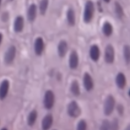

7.1. disease¶
7.1.1. alzheimer’s¶

overview
age-associated - tons of people get it
doesn’t kill you, secondary complications like pneumonia will kill you
rate is going up
very expensive to treat
declarative memories are affected by Alzheimer’s
these are memories that you know
first 2 areas to go in Alzheimer’s
hippocampus
patient HM had no hippocampus
no anterograde memory - learning new things
hippocampus stores 1 day of info
offloading occurs during sleep (REM sleep) to prefrontal cortex, temporal lobe, V4
dreaming - might see images as you are offloading
basal forebrain - spread synapses all over cortex
uses Ach
ignition key for entire cortex
alzheimer’s characteristics only found in autopsy
amyloid plaques
maybe A-beta causes it
A-beta comes from APP
A-beta42 binds to itself
prion (starts making more of itself)
this cycle could be exacerbated by injury
clumps and attracts immune system which kills local important cells
this could cause Alzheimer’s
rare genetic mutations in A-beta increase probability you get Alzheimer’s
anti-inflammation may be too late
can take drugs that increase Ach functions - ex. cholinergic agonists, cholinesterase inhibitors
tangles
tangles made of protein called Tau
most people think these are just dead cells resulting from Alzheimer’s but some think they cause it
7.1.2. parkinson’s¶
loss of substantia nigra pars compacta dopaminergic neurons
when you get down to 20% what you were born with
dopaminergic neurons form melanin = dark color
hits to head can give inflammation
know what they need to do - don’t have enough dopamine to act
treat with L Dopa -> something like dopamine -> take out globus pallidus
Lewy bodies are clumps of alpha synuclein - appear at dopaminergic synapses
clumps like A-beta42
associated with early-onset Parkinson’s (rare) associated with genetic mutations
bradykinesia - slowness of movement
age can give parksinson’s
no evidence that toxins can induce parkinsons
PTP/ pesticides can induce Parkinson’s in test animals
1/500 people
7.1.3. pathology¶
7.1.3.1. basics¶
pathologists work with tissue samples either visually or chemically
anatomic pathology relies on the microscope whereas clinical pathology does not
pathologists convert from tissue image into written report
when case is challenging, may require a second opinion (v rare)
steps (process takes 9-12 hrs):

tissue is surgically removed
more tissue collected is generally better (gives more context)
this procedure is called a biopsy
much is written down at this step (e.g. race, gender, locations in organ, different tumors in an organ) that can’t be seen in slide alone
fixation: keeps the tissue stable (preserves dna also) - basicallly just soak in formalin
dissection: remove the relevant part of the tissue
tissue processor - removes water in tissue and substitute with wax (parafin) - hardens it and makes it easy to cut into thin strips
microtone - cuts very thin slices of the tissue (2-3 microns)
staining
H & E - hematoxylin and eosin stain - most popular (~80%) - colors the cells in a specific way, bc cells are usually pretty transparent
hematoxylin stains nucleic acids blue
eosin stains proteins / cytoplasm pink/red
immunohistochemistry (IHC) - tries to identify cell lineage: 10-15%
identifies targets
use antibodies tagged with chromophores to tag tissues
gram stain - highlights bacteria
giemsa - microorganisms
others…for muscle, fungi
viewing
usually analog - put slide on something that can move / rotate
whole-slide image (WSI) - resulting entire slide
tissue microarray (TMA) - smaller, fits many samples onto the same slide
with paige: put slide through digital scanner (only 5% or so of slides are currently digital)
later on, board meets to decide on treatment (based on pathology report)
usually some discussion betweeon original imaging (pre-biopsy) and pathologist’s interpretation
resection - after initial diagnosis, often entire tumor is removed (resection)
how can ai help?
can help identify small things in large images
can help with conflict resolution
after (successful) neoadjuvant chemotherapy, problem becomes more difficult
very few remaining cancer cells
cancer/non-cancer cells become harder to distinguish (esp. for prostate)
tumor bed is patchily filled with cancer cells - need to better clarify presence of cancer
7.1.3.2. papers¶
Deep Learning Models for Digital Pathology (BenTaieb & Hamarneh, 2019)
note: alternative to histopathology are more expensive / slower (e.g. molecular profiling)
to promote consistency and objective inter-observer agreement, most pathologists are trained to follow simple algorithmic decision rules that sufficiently stratify patients into reproducible groups based on tumor type and aggressiveness
magnification usually given in microns per pixel
WSI files are much larger than other digital images (e.g. for radiology)
DNNs can be used for many tasks: beyond just classification, there are subtasks (e.g. count histological primitives, like nuclei) and preprocessing tasks (e.g. stain normalization)
challenge: multi-magnification + high dimensions (i.e. millions of pixels)
people usually extract smaller patches and train on these
this loses larger context
one soln: pyramid representation: extract patches at different magnification levels
one soln: stacked CNN - train fully-conv net, then remove linear layer, freeze, and train another fully-conv net on the activations (so it now has larger receptive field)
one soln: use 2D LSTM to aggregate patch reprs.
challenge: annotations only at the entire-slide level, but must figure out how to train individual patches
e.g. use aggregation techniques on patches - extract patch-wise features then do smth simple, like random forest
e.g. treat as weak labels or do multiple-instance learning
could just give slide-level label to all patches then vote
can use transfer learning from related domains with more labels
challenge: class imbalance
can use boosting approach to increase the likelihood of sampling patches that were originally incorrectly classified by the model
challenge: need to integrate in other info, such as genomics
when predicting histological primitives, often predict pixel-wise probability maps, then look for local maxima
can also integrated domain-knowledge features
can also have 2 paths, one making bounding-box proposals and another predicting the probability of a class
alternatively, can formulate as a regression task, where pixelwise prediction tells distance to nearest centroid of object
could also just directly predict the count
can also predict survival analysis
Clinical-grade computational pathology using weakly supervised deep learning on whole slide images (campanella et al. 2019)
use slide-level diagnosis as “weak supervision” for all contained patches
1st step: train patch-level CNNs using MIL
if label is 0, then all patches should be 0
if label is 1, then only pass gradients to the top-k predicted patches
2nd step: use RNN (or another net) to combine info across S most suspicious tiles
Human-interpretable image features derived from densely mapped cancer pathology slides predict diverse molecular phenotypes (diao et al. 21)
An artificial intelligence algorithm for prostate cancer diagnosis in whole slide images of core needle biopsies: a blinded clinical validation and deployment study (pantanowitz et al. 2020 - ibex)
549 train, 2501 internal test slides, 1627 external validation
predict cancer prob., gleason score 7-10, gleason pattern 5, perneural invasion, cancer percentage
algorithm
GB classifies background / non-background / blurry using hand-extracted features for each tile
each tile gets predicted probability for 18 pre-defined classes (e.g. GP 3)
ensemble of 3 CNNs that operate at different magnifications
aggregation: 18-probability heatmaps are combined to calculate slide-level scores
ex (for predicting cancer): sum the cancer-related channels in the heatmap , apply 2x2 local averaging, then take max
7.1.4. cancer¶
7.1.4.1. overview¶
tumor = neoplasm - a mass formation from an uncontrolled growth of cells
benign tumor - typically stays confined to the organ where it is present and does not cause functional damage
malignant tumor = cancer - comprises organ function and can spread to other organs (metastasis)
relation network based aggregator on patches
lymphatic system drains fluids (non-blood) from organs into lymph nodes
cancer often mestastasize through these
staging - describes where cancer is located and where it has spread
clinical staging - based on non-tissue things
pathological staging - elements of staging pTNM
size / depth of tumor “T”
number of lymph nodes / how many had cancer “N”
number of metastatic foci in non-lymph node organ “M”
these are combined to determine the cancer stage (0-4)
prognosis - chance of recovery
7.1.4.1.1. treatments¶
chemo
traditional chemotherapy disrupts cell replication
hair loss and gastrointestinal symptoms occur bc these cells also rapidly replicate
adjuvant chemotherapy - after cancer is removed, most common
neoadjuvant chemo - after biopsy, but before resection (when very hard to remove)
targeted therapies
ex. address genetic aberration found in cancer cells
immunotherapy - enhance body’s immune response to cancer cells (so body will attack these cells on its own)
want the antigens on the tumor to be as different as possible (so they will be characterized as foreign)
to measure this, can conduct total mutational burden (TMB) or miscrosatellite instability (MSI) test
genetic tests - hard to do by looking at glass slide
some tumors express receptors (e.g. CTLA4, PD1) that shut off immune cells - some drugs try to block these receptors
7.1.4.2. prostate cancer¶
tests
feel with finger
antigen test - blood test
ultrasound - probe inserted
biopsy - needle inserted to take out tissue
grading
stages (they have subdivisions, e.g. IIA, IIB, IIC)
I - early, slow-growing
II - small, but risky
III - likely to spread
IV - has spread beyond the prostate
recurrent - has come back after treatment
in addition to stages 0-4, prostate cancer is also given Gleason score
look at 2 biggest cancer regions and identifies them as a Gleason pattern from 3 (best) to 5 (worst)
this results in a sum (e.g. 5+4, 3+4) - note 3+4 is not same as 4+3
treatments
prostatectomy - remove the prostate
radiation therapy - kills specifically cancer cells
radiative seed implants - implated into prostate to kill cancer cells
cryotherapy - kill prostate cancer cells by freezing them
hormone therapy - block hormone which grows prostate cancer cells
chemotherapy
human benchmarks
-
71 patients, 213 scored observations, 3 pathologists
weighted pairwise kappas: 0.16, 0.29, 0.23
(unweighted): 0.15, 0.29, 0.24
Interobserver reproducibility of Gleason grading of prostatic carcinoma: General pathologists
38 biopsies, 41 pathologists
consensus grade groups: [2-4, 5-6, 7, 8-10]
overall kappa: 0.435
Interobserver variability in Gleason histological grading of prostate cancer
407 slides, 2 pathologists
primary gleason: k=0.34
secondary gleason: k=0.37
sum: k=0.43
-
ai papers
Learning Whole-Slide Segmentation from Inexact and Incomplete Labels using Tissue Graphs (anklin et al. 2021)
SegGini, a weakly supervised segmentation method using graphs
constructs a tissue-graph for WSI (node is tissue region)
weakly-supervised segmentation via node classification
data
UZH dataset - 5 five TMAs with 886 spots (each 3100×3100 pixels) with complete pixel-level annotations and inexact image-level gradess
SICAPv2 dataset - 155 WSIs and 18,783 tiles of size 512×512 with complete pixel annotations
7.1.4.3. bladder cancer¶
tests
urinalysis - look for things like blood in urine
urine cytology - use microscope to look for cancer cells in urine
urine tests for specific tumor parkers
cystoscopy - invasive lens takes image of bladder
tests lead to a biopsy
grading
invasiveness: can be non-invasive, invasive (grows into deeper layers of bladder)
superficial = non-muscle invasive - hasn’t grown into main muscle layer of bladder
grade: again asigned stages 0 - IV based on TNM
low-grade = well-differentiated
high-grade (worse) = poorly differentiated, undifferentiated
human benchmark
The reliability of staging and grading of bladder tumours. Impact of misinformation on the pathologist’s diagnosis (olsen et al. 1993)
4 consultant pathologists
40 biopsy specimens of bladder tumours staging invasion
grading using Bergkvist classification
kappa < 0.50
ai papers
Bladder cancer in the time of machine learning: Intelligent tools for diagnosis and management (2021)
bladder cancel ranks tenth in worldwide absolute cancer incidence
non-pathology
Integrating Diagnosis Rules into Deep Neural Networks for Bladder Cancer Staging - bladder cancer staging from MR images
Deep Learning Approach for Assessment of Bladder Cancer Treatment Response - bladder cancer treatment assessment from CT scans
cystoscopy - few DNN papers here
pathology
Urinary Bladder Tumor Grade Diagnosis Using Online Trained Neural Networks (2003)
92 patients with BC
90%, 94.9%, and 97.3%, for Grade I, II, and III respectively
builds on Neural network-based segmentation and classification system for automated grading of histologic sections of bladder carcinoma (2002)
Deep Learning Predicts Molecular Subtype of Muscle-invasive Bladder Cancer from Conventional Histopathological Slides (woerl et al. 2020) - predict molecular subtype using histopathology images in Cancer Genome Atlas Urothelial Bladder Carcinoma dataset
bladder basics
muscles in bladder contract and force urine out
urethelium - inner layer that is able to stretch (has many layers) - this is where cancer originates
in situ - cancer only here
invasive - goes into the muscle
if it goes into the urine, can easily test (also usually triggers blood in the urine)
biopsy usually looks mostly at urethelium and vessels right next to it (will not go all the way to the muscle, as this could puncture the bladder)
very targeted (unlike prostate biopsy), slide will come with some tag like “in area with redness” from scopy
4 possibilities
big mass - should see cancer
inflammation - could be cancer or many other things (e.g. atypia vs carcinoma)
get many parts / sites of biopsies
H & E slide
shape:
papillary |
flat |
can also have a combo |
|---|---|---|
|
|


grade:
low |
high |
|---|---|
 |
|

when shape is flat, grade often can’t be determined reliably
lots of names for uncertain (e.g. upump - uncertain malignant potential, or atypia)
much easier to decide shape than grade
once you find high grade, look for invasiveness (and deeper layers are worse)